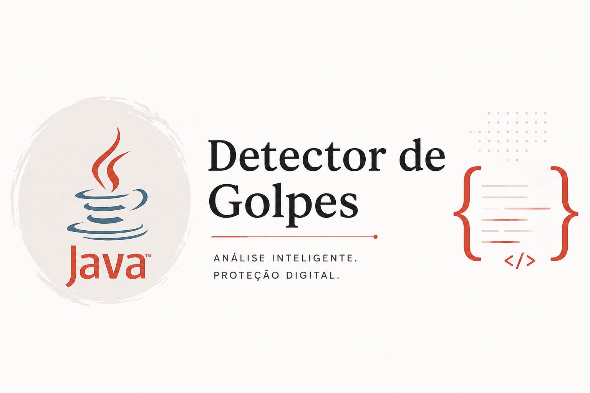

>> PROJETO_01
DETECTOR DE
GOLPES
Aplicação desenvolvida em Java para analisar mensagens e identificar possíveis indicadores de golpes digitais.

>> SOBRE O PROJETO
IDENTIFICANDO
AMEAÇAS
O Detector de Golpes é uma aplicação desenvolvida em Java capaz de analisar mensagens e identificar padrões frequentemente utilizados em tentativas de fraude digital.
O sistema atribui uma pontuação aos indicadores encontrados e classifica o nível de risco da mensagem.
>> FUNCIONALIDADES
ANÁLISE DE TEXTO
Analisa automaticamente o conteúdo de mensagens.
PADRÕES SUSPEITOS
Identifica palavras e expressões relacionadas a possíveis golpes.
ANÁLISE DE LINKS
Detecta URLs presentes nas mensagens analisadas.
NÍVEL DE RISCO
Classifica a mensagem com base nos indicadores encontrados.
>> TECNOLOGIAS
>> ESTRUTURA
MAIN
Responsável pela interação inicial, seleção do arquivo e apresentação dos resultados.
ANALISADOR DE GOLPES
Realiza a análise das mensagens, identifica padrões e calcula a pontuação de risco.
PALAVRAS SUSPEITAS
Organiza os indicadores utilizados durante a análise.
RESULTADO
Armazena a pontuação, classificação e os motivos encontrados.
>> OBJETIVO
O projeto foi desenvolvido para praticar Java, Programação Orientada a Objetos e manipulação de arquivos, além de explorar como sistemas baseados em regras podem identificar padrões suspeitos.